We apply computational approaches to high-throughput transcriptomic data, uncovering how RNA-level changes drive cancer, neurodegeneration, and ageing-related pathologies, and we build open tools to make these analyses accessible to all researchers.
Lab photo placeholder
Replace this block with your team photo (see the HTML comment above).
Recommended: 1400 × 600 px or wider.
The Disease Transcriptomics Lab, led by Nuno Morais, is a computational biology group at NOVA Medical School, Lisbon. We apply mostly computational approaches, particularly those involving the analysis of high-throughput genomic and transcriptomic data, to fundamental questions in biomedical research.
We have a long-term interest in the systems-level transcriptional regulation underlying mammalian cell specification, often perturbed in disease, spanning cancer, neurodegeneration, and other ageing-related pathologies.
A central commitment of the lab is open, reproducible science: every tool we build is freely available, documented, and designed to be usable by non-computational scientists. Along the way, we develop applications to assist colleagues in analyses of transcriptomic data, transparently sharing our approaches and avoiding "black boxes".
Splicing and expression alterations driving tumour progression.
RNA dysregulation in ageing brain and neurodegenerative disease.
User-friendly bioinformatics software for the whole community.
A multidisciplinary group combining computational biology, bioinformatics, and molecular biology expertise.
[Add a short bio here.]
Research interests: [Interest 1] · [Interest 2] · [Interest 3] · [Interest 4]
[Add a short bio here.]
[Add a short bio here.]
[Add a short bio here.]
[Add a short bio here.]
[Add a short bio here.]
[Add a short bio here.]
Open-source, user-friendly applications for transcriptomic analysis: freely accessible via our software hub and GitHub.
Analysis of age-related gene expression changes across tissues using large-scale human transcriptomic data from GTEx and TCGA.
Intuitive differential alternative splicing analyses using beta distributions for robust, interpretable results.
Identification of candidate causal perturbations from differential gene expression data via CMap connectivity mapping.
Alternative splicing quantification, visualisation, and analysis from TCGA, GTEx, and SRA datasets: with an R/Bioconductor package.
Interactive and flexible analysis platform for single-cell RNA-seq data, supporting exploratory and reproducible workflows.
Toolkit for evaluating gene sets as phenotype markers from gene expression data: available as a Bioconductor R package with a full tutorial.
A curated list of key papers from the lab. For the full list, visit Nuno Morais' ORCID profile ↗
Follow us for real-time lab updates, paper announcements, and more.
Past members of the lab who have gone on to further positions in academia and industry.
NOVA Medical School
Universidade NOVA de Lisboa
Rua do Instituto Bacteriológico, 5
1150-190 Lisboa
Portugal